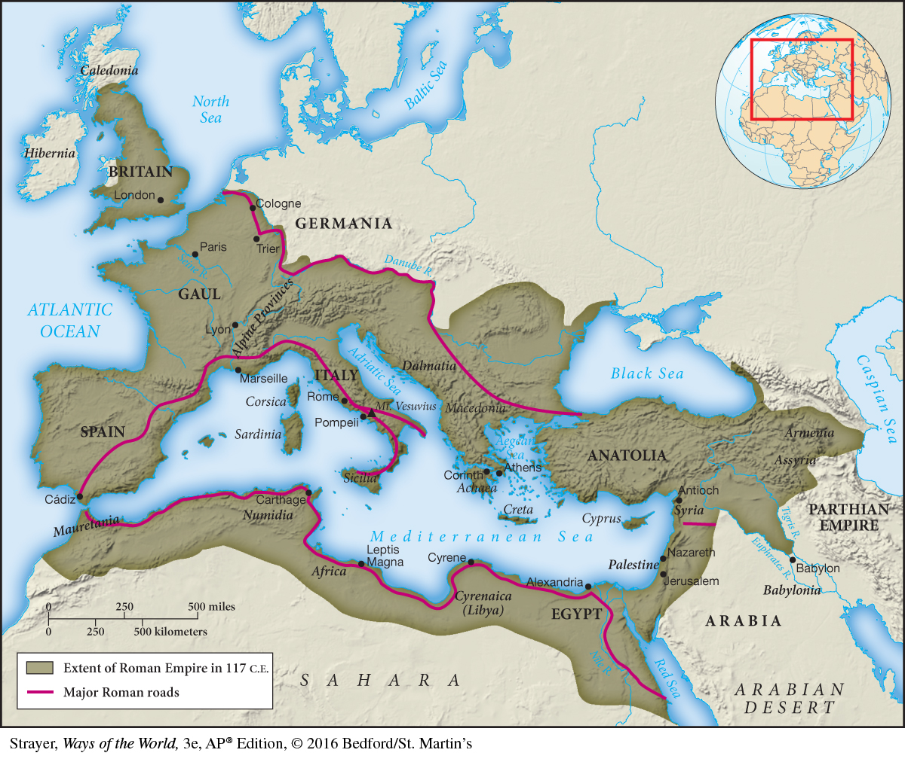

Map 3.4 The Roman EmpireAt its height in the second century C.E., the Roman Empire incorporated the entire Mediterranean basin, including the lands of the Carthaginian Empire, the less developed region of Western Europe, the heartland of Greek civilization, and the ancient civilizations of Egypt and Mesopotamia.